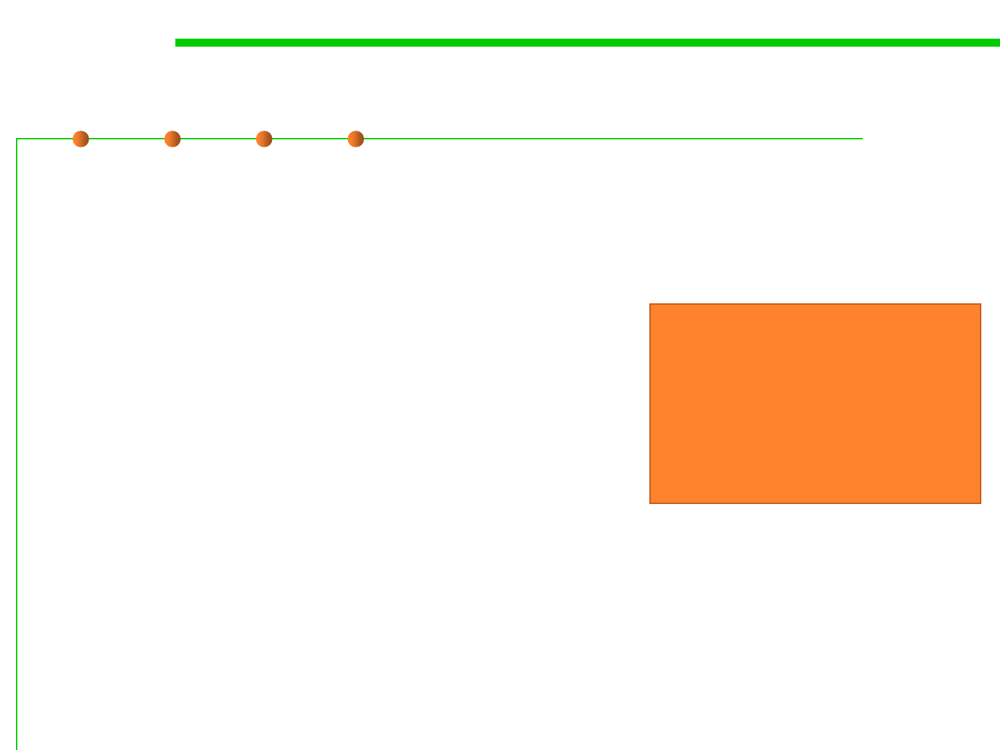

1.2 Quality Objectives of Software Construction
Tradeoff between quality properties
▪ How can one get integrity without introducing protections of various
kinds, which will inevitably hamper ease of use?
▪ Economy often seems to fight with functionality.
▪ Optimal efficiency would require perfect
adaptation to a particular hardware and
software environment, which is the opposite
of portability, and perfect adaptation to a
specification, where reusability pushes
towards solving problems more general
than the one initially given.
Integrity vs. ease of use
Economy vs. functionality
Efficiency vs. portability
Efficiency vs. reusability
Economy vs. reusability
Timeliness vs. extendibility
▪ Timeliness pressures might tempt us to use “Rapid Application
Development” techniques whose results may not enjoy much
extendibility.